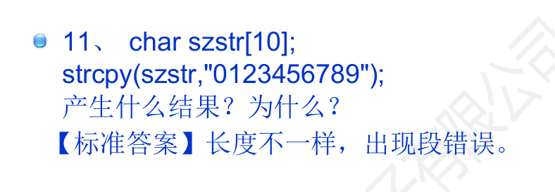

（一）数组基础
- 下标从 0 开始，
int a[5]的合法下标是 0~4；a[5]越界，属未定义行为，可能不报错但会破坏其他数据。 - 二维数组按行优先存储：
int m[3][4]等价于 3 个int[4]。 - 数组长度必须是编译期常量（C99 起支持变长数组 VLA，但可移植性差，工程中慎用）。
（二）数组名与指针
数组名在多数表达式中退化为指向首元素的指针，但有两个例外：
sizeof(arr)得到整个数组的字节数，不是指针大小。&arr的类型是"数组指针"，&arr + 1跳过整个数组。
作为函数参数时，数组一律退化为指针，因此函数内 sizeof 拿不到数组长度，必须额外传长度。
（三）字符串与 '\0'
C 字符串是以 '\0' 结尾的字符数组，'\0' 不计入 strlen，但占用存储空间：
char s1[] = "abc"; /* 长度 4 字节：'a','b','c','\0'，可修改 */
char *s2 = "abc"; /* 指向只读常量区，s2[0] = 'x' 属 UB，运行可能崩溃 */
sizeof("abc") /* 4 */
strlen("abc") /* 3 */s2 指向的 "abc" 在常量区（.rodata），那一段被系统映射为只读页 —— 所以 s2[0] = 'x' 不是"改不掉"，而是进程当场被终止。要修改内容就换数组：char s2[] = "abc";，它在栈上有自己的可写副本。内存分区的完整划分见第二章（五）。
这里有个经典例题，错法和上一段正好互补 —— 不是"写只读区"，而是"写超了"：
char szstr[10];
strcpy(szstr, "0123456789"); /* 11 字节（含结尾 '\0'）塞进 10 字节的盒子 */结果是长度不一致，运行时出现段错误（或悄悄写坏相邻变量）。这类越界编译器不会报错，只会在运行时以"莫名其妙的崩溃"形式出现。

（四）常用字符串函数
| 函数 | 作用 | 常见误用 |
|---|---|---|
strlen | 求长度（不含 '\0'） | 对未终止的数组调用会越界读 |
strcpy / strncpy | 复制 | strcpy 不检查目标容量；strncpy 不保证补 '\0' |
strcat / strncat | 拼接 | 目标缓冲区空间不足导致溢出 |
strcmp | 比较 | 返回 0 表示相等，直接用 if (strcmp(a, b)) 判断"相等"是反的 |
strchr / strstr | 查找字符 / 子串 | 未判断返回 NULL 就解引用 |
更安全的写法是用 snprintf 代替 strcpy / sprintf，并显式传入缓冲区大小。